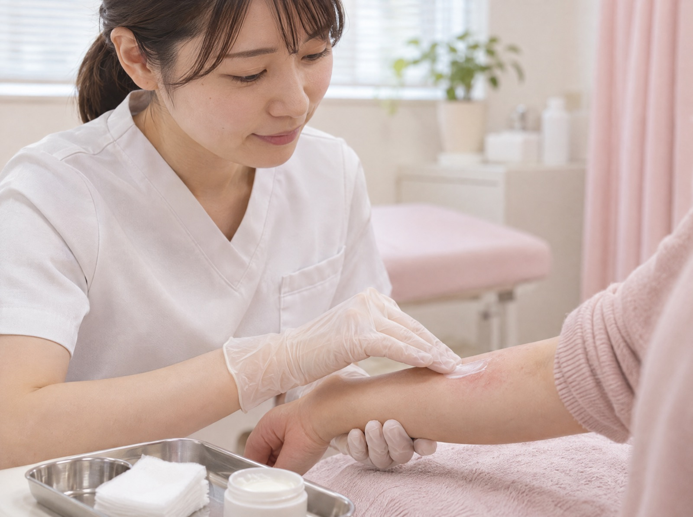
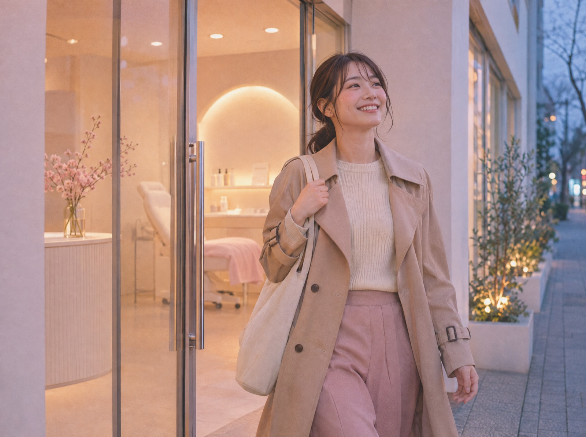
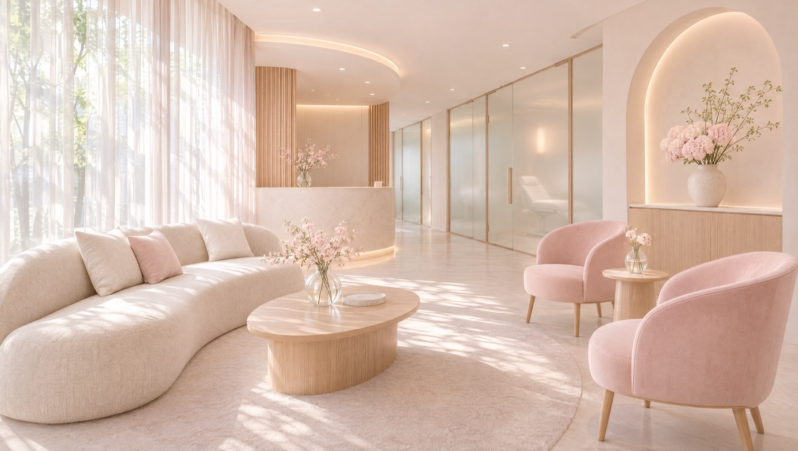
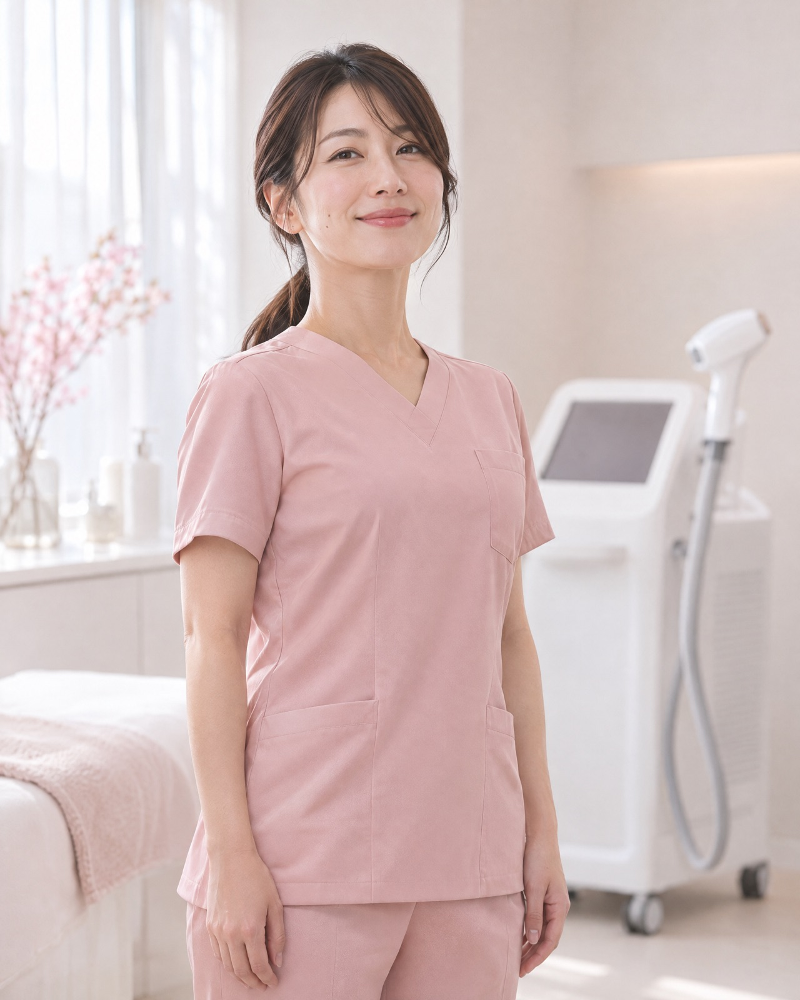

ノルマがないから、
本当に必要なことだけを話せる
施術の契約数や物販の目標はありません。患者さんに合わない施術は、はっきり「今は必要ありません」と伝えて大丈夫です。
提案用サンプル（名称・数値は架空、写真はAI生成のイメージ）
看護師募集 美容未経験から歓迎
日勤のみ・完全予約制の皮膚科です。保険診療で看護の経験を活かしながら、美容医療は先輩について一から覚えられます。
※数値はサンプルです（2025年度実績を想定）
施術の契約数や物販の目標はありません。患者さんに合わない施術は、はっきり「今は必要ありません」と伝えて大丈夫です。

湿疹やニキビ、やけどなど一般皮膚科の診療が半分を占めます。病院で身につけた処置や観察の力が、初日から役に立ちます。

受付は18時30分まで。急な飛び込みで診療が延びることがほとんどないので、平日の夜に予定を入れられます。
保険診療と美容診療の両方を担当します。美容は研修を終えたものから少しずつ任せます。
医療脱毛・レーザー照射は、院内研修で合格した看護師が担当します。
入職2年目の看護師の、平日のスケジュールです。
出勤・朝礼
その日の予約と、注意が必要な患者さんを全員で確認します。
午前の診療
保険診療の介助が中心。合間に美容の施術が入ります。
お昼休憩（90分）
交代制ではなく全員一斉。近くのカフェに行く人も。
午後の診療
午後は美容の予約が多め。レーザー照射やカウンセリングに入ります。
片付け・記録
カルテの記入と、翌日の準備を済ませます。
退勤
残業はほとんどありません。
覚える順番を決めてあります。先にできるようになるのは、慣れている保険診療からです。
入職〜1週目
院内の流れを知る
受付から会計までを見学。カルテや機器の使い方を、担当の先輩と一緒に確認します。
1ヶ月目
保険診療をひとりで
診察介助と処置を任せます。わからないことは、その場で先輩に聞ける距離にいます。
3ヶ月目
美容の施術を覚える
ピーリングや光治療から。モデル練習と院内テストに合格したら、患者さんに担当します。
半年
カウンセリングにも入る
レーザー照射とカウンセリングまでできれば、ひとり立ちです。
マンツーマンで教えます
入職から半年間、同じ先輩が教育担当につきます。週1回、10分の振り返りの時間があります。

入職2年目／前職：総合病院（外科病棟）
夜勤がなくなって、
朝が楽しみになりました。
美容は全くの未経験でしたが、最初の1ヶ月は保険診療だけだったので、気持ちに余裕を持って覚えられました。
A.S.

入職4年目／前職：内科クリニック
「売らなくていい」の
ひと言が、決め手でした。
今は教育担当として新しい人を見ています。自分が教わったときと同じ順番で伝えています。
M.K.
※サンプルのため、人物・コメントは架空です（写真はAI生成）。実際の制作では、在籍スタッフの写真とコメントに差し替えます。
施術はスタッフ価格で
院内のほぼすべての施術を、スタッフ割引で受けられます。
希望休は月3日まで
シフトは前月の15日までに確定。連休も取りやすい体制です。
ユニフォームは貸与
クリーニングも院で行います。
※給与・年収例・休日はサンプルの数値です。
Q美容医療の経験がなくても大丈夫ですか？
A大丈夫です。在籍している看護師の多くが、病院から転職してきた美容未経験者です。
Q施術の勧誘やノルマはありますか？
Aありません。評価にも、契約数や売上は入れていません。
Qブランクが長くても働けますか？
A働けます。採血などの手技は、入職後に先輩と練習してから担当します。
Q子育てとの両立はできますか？
A時短勤務やパートへの切り替えを相談できます。お子さんの急な発熱の際も、全員でカバーしています。
Q見学のときに、履歴書は必要ですか？
A必要ありません。私服で、手ぶらでお越しください。